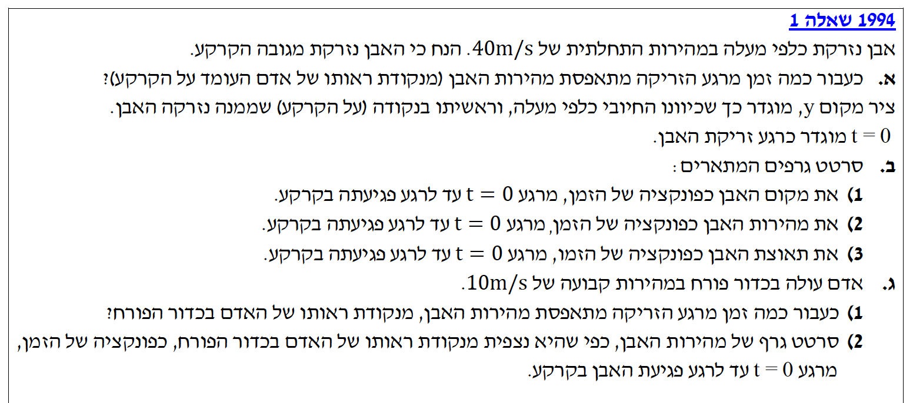

פתרון מלא ומודרך: שלבי חישוב, גרפים והסבר רעיוני

אבן נזרקת כלפי מעלה. נגדיר את מערכת הצירים כפי שנדרש בשאלה:
אנו מחפשים את הזמן $t$ שבו מהירות האבן מתאפסת ($v(t) = 0$), מנקודת מבטו של צופה העומד על הקרקע (מערכת המעבדה).
נשתמש במשוואת המהירות כפונקציה של הזמן בתנועה שוות תאוצה:
נציב את הנתונים שלנו ($v_0 = 40, a = -10, v(t) = 0$):
כדי לדעת מהו משך התנועה שעבורו עלינו לשרטט את הגרפים, נמצא תחילה את רגע הפגיעה בקרקע.
האבן פוגעת בקרקע כאשר מיקומה מתאפס ($y(t) = 0$). נשתמש במשוואת המיקום:
כמו כן, נחשב את שיא הגובה (מתרחש ב- $t=4\text{s}$): $y(4) = 40(4) - 5(4)^2 = 160 - 80 = 80 \text{ m}$.
גרף פרבולי קעור כלפי מטה ("פרבולה בוכה") בשל התאוצה השלילית. מתחיל מ-(0,0), מגיע לשיא של 80m ב-t=4s, וחוזר ל-0 ב-t=8s.
גרף לינארי (קו ישר) בעל שיפוע שלילי קבוע, המייצג את תאוצת הכובד. משוואת הישר היא $v(t) = 40 - 10t$.
לאורך כל התנועה התאוצה קבועה, ושווה בגודלה ובכיוונה לתאוצת הכובד: $a(t) = -10 \text{ m/s}^2$.
הסעיף עוסק במהירות יחסית - נושא שאינו נמצא בתוכנית הלימודים העדכנית.